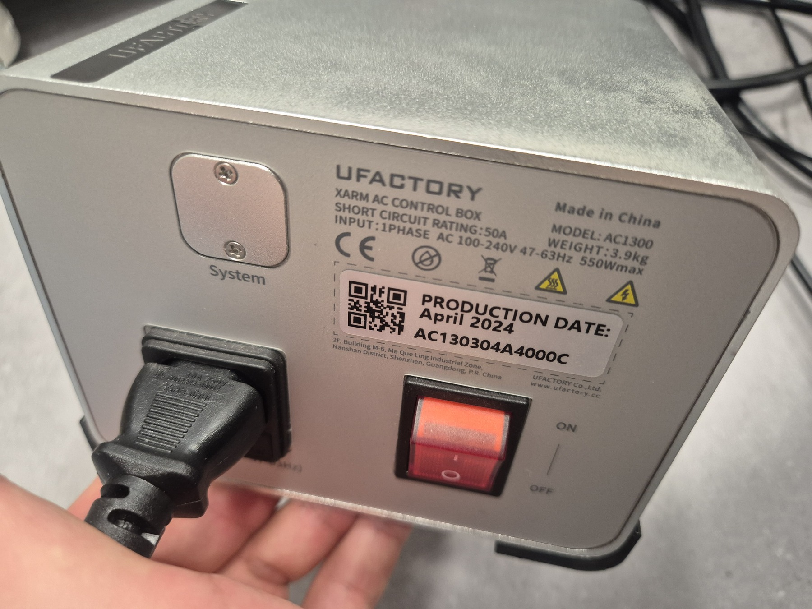
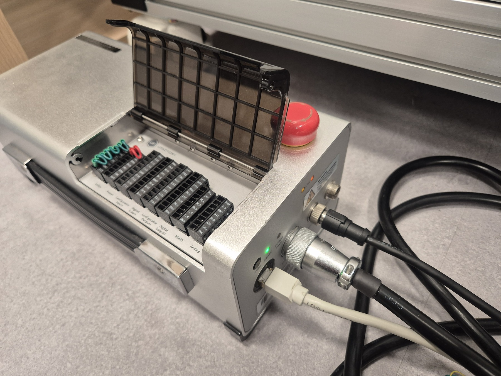
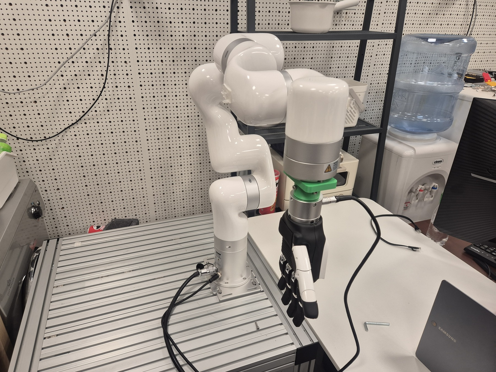

ISSUE-001 · resolved · 2026-07-27
xArm was cabled, powered, and still unreachable.
The robot did not respond at its label IP despite a live Ethernet carrier. The incident was a host-network configuration problem, not a robot or cable fault.
Resolution: assign
/24 Evidence and initial state


| Observation | Meaning |
|---|---|
UP, LOWER_UP; carrier was 1 | Cable and link layer were healthy. |
ping initially had 100% loss | Layer-3 host configuration or route was missing/wrong. |
Controller label says | Robot-side target address was known and did not need scanning. |
Diagnosis
The active wired NetworkManager profile did not provide a valid 192.168.1.x/24 address to the physical interface. A connected cable alone cannot provide a route when PC and robot are directly connected; the PC must use a distinct address on the same subnet.
Resolution procedure
sudo nmcli connection modify "netplan-enp6s0f3" ipv4.method manual ipv4.addresses/24 ipv4.gateway "" ipv4.dns "" ipv4.never-default yes sudo nmcli connection down "netplan-enp6s0f3" sudo nmcli connection up "netplan-enp6s0f3" ip route get ping -I -c 3
Verification
- Interface:
/24 - Ping: 3/3 replies, ~0.13 ms
- ARP: controller MAC
- TCP control ports:
502,30001–30004reachable - UFACTORY Studio: connected and robot control confirmed
Follow-up
This resolves connectivity only. See ISSUE-002 for the calibration blocker, and ISSUE-003 for the software stack required to drive the reproducible baseline.



